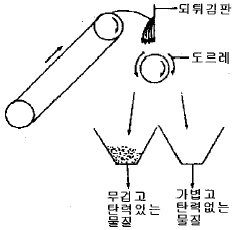
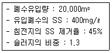
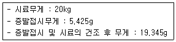
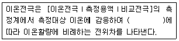
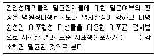
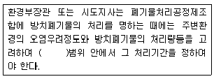
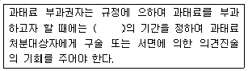
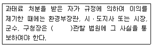

폐기물처리기사 (2007-05-13 기출문제)
1과목: 폐기물 개론
1. 폐기물의 압축비(Compaction ratio)를 2에서 4로 증가시킬 경우 부피 감소율(Volume reduction rete)은 몇 배 증가하겠는가?
- 1.5배
- 2.0배
- 2.5배
- 3.0배
(정답률: 알수없음)

2. 쓰레기의 성상분석 절차로 가장 알맞은 것은?
- 시료→전처리→물리적조성→밀도측정→건조→분류
- 시료→전처리→건조→분류→물리적조성→밀도측정
- 시료→밀도측정→물리적조성→건조→분류→전처리
- 시료→밀도측정→건조→분류→전처리→물리적조성
(정답률: 알수없음)
3. 건식 전단파쇄기에 관한 설명으로 틀린 것은?
- 고정칼, 완복 또는 회전칼의 교합에 의하여 폐기물을 전단한다.
- 충격파쇄기에 비하여 파쇄속도가 빠르다.
- 충격파쇄기에 비하여 이물질의 혼입에 약하다.
- 충격파쇄기에 비하여 파쇄물의 크기를 고르게 할 수 있다.
(정답률: 알수없음)
4. 폐기물 차량 총중량이 19945kg, 공차량 중량이 13725kg, 적재함의 크기 H:140cm, W:250cm, L:410cm 일 때 차량 적재계수(ton/m3)는?
- 0.33
- 0.43
- 0.53
- 0.63
(정답률: 알수없음)
5. 청소상태를 평가하는 방법 중 서비스를 받는 사람들의 만족도를 설문조사하여 계산하는 ‘사용자 만족도 지수’의 약자로 알맞은 것은?
- USI
- UAI
- CEI
- CDI
(정답률: 알수없음)
6. 새로운 쓰레기 수집 시스템에 관한 설명으로 틀린 것은?
- 모노레일 수송 : 쓰레기를 적환장에서 최종처분장까지 수송하는데 적용할 수 있다.
- 콘베이어 수송 : 지상에 설치된 콘베이어를 사용하며 시설비가 저렴한 장점이 있다.
- 관거를 이용한 수거 : 공기수송, 물과 혼합하여 수송하는 슬러리수송, 캡슐 수송 등이 있다.
- 관거를 이용한 수거 : 쓰레기 발생밀도가 높은 지역에서 현실성이 있다.
(정답률: 알수없음)
7. 함수율이 94%인 수거분뇨 200kL/d를 70% 함수율의 건조슬러지로 만들면 하루의 건조슬러지 생성량은? (단, 수거분뇨의 비중은 1.0 기준)
- 27 kL/d
- 30 kL/d
- 40 kL/d
- 45 kL/d
(정답률: 알수없음)
8. 인구 500000인 어느 도시의 쓰레기 발생량 중 가연성이 20%라고 한다. 쓰레기 발생량이 0.6kg/인ㆍ일 이고, 밀도는 0.8 ton/m3, 쓰레기차의 적재용량이 15m3일 때, 가연성 쓰레기를 운반하는데 필요한 차량은? (단, 차량은 1일 1회 운행 기준)
- 2대/일
- 5대/일
- 8대/일
- 10대/일
(정답률: 알수없음)
9. 도시 폐기물의 개략분석(Proximate analysis)항목과 가장 거리가 먼 것은?
- 수분함량
- 휘발성 고형물
- 공기함유량
- 고정탄소
(정답률: 알수없음)
10. 어떤 쓰레기의 입도를 분석한 바 입도누적곡선상의 10%, 40%, 60%, 90%의 입경이 각각 2, 5, 10, 20mm 이었다고 한다. 이 때 균등계수는?
- 2
- 5
- 10
- 20
(정답률: 알수없음)
11. 다음 그림은 어떠한 선별기를 나타낸 것인가?

- Stoners
- Jigs
- Secators
- Table
(정답률: 알수없음)
12. 와전류분리에 대한 설명으로 가장 거리가 먼 것은?
- 와전류에 의한 자속의 방향은 그것을 일으키게 하는 자속과 같은 방향이 되어 반발력을 상쇄 시킨다.
- 와전류는 시간적으로 변화하는 자장속에 놓인 도체의 내부에 전자유도에 의해 생기는 화상의 전류이다.
- 자속이 두 개 있으며 고유저항, 도자율 등의 물성의 차이에서 반발력 크기의 차이가 생기기 때문에 비자성의 도체의 분리가 가능하다.
- 비자성이고 전기전도도가 좋은 물질을 와전류현상에 의해 다른 물질에서 분리할 수 있다.
(정답률: 알수없음)
13. 쓰레기 발생량 예측방법 중에서 최저 5년 이상의 과거 처리실적을 수식 model에 대입하여 과거의 경향을 가지고 장래를 예측하는 방법은?
- 대입법
- 실적모델법
- 장래보델법
- 경향법
(정답률: 알수없음)
14. 도시폐기물을 파쇄할 경우 X90=1.9cm로 하여(90% 이상을 1.9cm보다 작게 파쇄할 경우) Xo(특성입자)를 구한 값은? (단, Rosin Rammler 식 적용, n=1)
- 약 0.53cm
- 약 0.83cm
- 약 1.23cm
- 약 1.53cm
(정답률: 알수없음)
15. 우리나라 수거분뇨 내의 염소이온 농도로 가장 적절한 것은?
- 5500mg/ℓ
- 8500mg/ℓ
- 1⑤00mg/ℓ
- 12500mg/ℓ
(정답률: 알수없음)
16. 쓰레기 발생량 및 성상변동에 관한 설명으로 틀린 것은?
- 일반적으로 도시의 규모가 커질수록 쓰레기의 발생량이 증가한다.
- 일반적으로 수집빈도가 높을수록 발생량이 증가한다.
- 일반적으로 쓰레기통이 작을수록 발생량이 증가한다.
- 생활수준이 높아지면 발생량이 증가하며 다양화된다.
(정답률: 알수없음)
17. 도시폐기물의 선별작업에서 가장 많이 사용되는 트롬멜스트린의 선별효율에 영향을 주는 인자와 가장 거리가 먼 것은?
- 회전 속도
- 진동 속도
- 폐기물 부하
- 체의 눈 크기
(정답률: 알수없음)
18. LCA는 4부분으로 구성되어 있다. 다음 중 그 내용과 가장 거리가 먼 것은?
- 목적 및 범위의 설정
- 정책분석
- 결과해석
- 영향평가
(정답률: 알수없음)
19. 쓰레기 발생량 조사방법에 관한 설명으로 틀린 것은?
- 물질수지법 : 일반적인 생활폐기물 발생량을 추산할 때 주로 이용한다.
- 적재차량 계수분석 : 일정기간 동안 특정지역의 쓰레기수거, 운반차량의 댓수를 조사하여, 이 결과를 밀도로 이용하여 질량으로 환산하는 방법이다.
- 직접계근법 : 비교적 정확한 쓰레기 발생량을 파악할 수 있다.
- 직접계근법 : 적재차량 계수 분석에 비하여 작업량이 많고 번거롭다는 단점이 있다.
(정답률: 알수없음)
20. 어느 도시의 폐기물 수거량이 2500000톤/년, 수거인부 3000명, 1일 작업시간 8시간, 년간 작업일수 340일 일 때 MHT는?
- 약 3.3
- 약 3.8
- 약 4.2
- 약 4.6
(정답률: 알수없음)
2과목: 폐기물 처리 기술
21. 폐기물처리의 고화처리방법 중 피막형성법(표면캡슐화법)의 장점에 속하는 것은?
- 침출성이 낮다.
- 높은 혼합율을 갖는다.
- 에너지 소요가 적다.
- 피막형성을 위한 수지값이 저렴하다.
(정답률: 알수없음)
22. 쓰레기와 하수처리장에서 얻어진 슬러지를 함께 매립하여한다. 쓰레기와 슬러지의 함수율은 각각 25%와 43%이다. 쓰레기와 슬러지를 중량비 8:2로 섞을 때 혼합체의 함수율은? (단, 비중은 1.0 기준)
- 약 29%
- 약 34%
- 약 37%
- 약 39%
(정답률: 알수없음)
23. 어느 지역에서 매립에 의해 처리하고자 하는 폐기물 양은 1일 150ton이다. 이를 도랑식 매립법(Trench Methods)에 의해 매립하고자 할 때 발생 폐기물 밀도 650kg/m3, 부피 감소율 45%, Trench 유효깊이는 1.5m, 매립면적 중 Trench 점유율이 80%라면, 1년간 소요 부지면적은?
- 약 39000m2
- 약 49000m2
- 약 59000m2
- 약 69000m2
(정답률: 알수없음)
24. 퇴비화의 장점과 가장 거리가 먼 것은?
- 운영시에 소요되는 에너지가 낮다.
- 다른 폐기물처리 기술에 비해 고도의 기술수준을 요구하지 않는다.
- 생산된 퇴비의 비료가치가 높다.
- 초기의 시설투자비가 낮다.
(정답률: 알수없음)
25. 다음 슬러지의 처리공정 중 가장 합리적인 순서대로 배치된 것은? (A:농축, B:탈수, C:건조, D:개량, E:소화, F:매립)
- A-E-B-D-C-F
- A-E-D-B-C-F
- A-B-E-D-C-F
- A-B-D-E-C-F
(정답률: 알수없음)
26. 슬러지 수분 결합상태 중 탈수하기 가장 어려운 형태는?
- 모관결합수
- 간극모관결합수
- 표면부착수
- 내부수
(정답률: 알수없음)
27. 포도당(C6H12O6)만으로 된 유기물 1.5kg이 혐기성 상태에 완전분해된다면 생산되는 메탄의 용적(Sm3)은?
- 약 0.28
- 약 0.34
- 약 0.43
- 약 0.56
(정답률: 알수없음)
28. 폐기물의 퇴비화기술에서 퇴비화의 운전인자는 매우 중요한 역할을 한다. 퇴비화의 운전인자 중 Bulking Agent의 특성이 아닌 것은?
- 수분 흡수능이 좋아야 한다.
- 쉽게 조달이 가능한 폐기물이어야 한다.
- 입자간의 구조적 안정성이 있어야 한다.
- 폐기물의 C/N비에 영향을 주지 않아야 한다.
(정답률: 알수없음)
29. 다량의 분뇨를 일시에 소화조에 투입할 때 일반적으로 나타나는 장해라 볼 수 없는 것은?
- 스컴(scum)의 발생 증가
- pH 저하
- 유기산의 저하
- 탈리액의 인출 불균등
(정답률: 알수없음)
30. 수분함량이 90%인 슬러지를 수분함량 50%로 낮추기 위해 톱밥을 첨가하였다면 슬러지 톤당 소요되는 톱밥의 양(kg)은? (단, 비중 1.0기준, 톱밥의 수분함량은 20%라 가정한다.)
- 약 640
- 약 1340
- 약 2570
- 약 3870
(정답률: 알수없음)
31. 일반적으로 매립장 침출수생성에 가장 큰 영향을 미치는 인자는?
- 쓰레기의 함수율
- 지하수의 유입
- 표토를 침투하는 강수(降水)
- 쓰레기 분해과정에서 발생하는 발생 수
(정답률: 알수없음)
32. 슬러지 고형화 방법 중 시멘트기초법의 장점에 관한 설명으로 적절치 못한 것은?
- 시멘트 혼합과 처리기술이 잘 발달되어 있다.
- 다양한 폐기물을 처리할 수 있다.
- 폐기물의 건조나 탈수가 필요하지 않다.
- 낮은 pH에서도 폐기물성분 용출 가능성이 없다.
(정답률: 알수없음)
33. 매립지의 표면차수막에 관한 설명으로 알맞지 않은 것은?
- 매립지 지반의 투수계수가 큰 경우에 사용한다.
- 지하수 집배수시설이 불필요하다.
- 단위면적당 공사비는 저가이나 전체적으로는 비싸다.
- 보수는 매립 전에는 용이하나 매립 후는 어렵다.
(정답률: 알수없음)
34. 침출수를 혐기성 공정을 이용하여 처리할 때 장점으로 틀린 것은?
- 고농도의 침출수를 희석없이 처리할 수 있다.
- 미생물의 낮은 증식으로 인하여 슬러지 처리비용이 감소된다.
- 호기성 공정에 비하여 낮은 영양물 요구량을 가진다.
- 중금속에 대한 저해요과가 호기성 공정에 비해 적다.
(정답률: 알수없음)
35. 다음과 같은 조건의 침전지에서 1일 발생하는 슬러지의 부피는? (단, 기타사항은 고려하지 않음)

- 2.53m3
- 2.77m3
- 2.92m3
- 3.16m3
(정답률: 알수없음)
36. COD/TOC ＜2.0, BOD/COD＜1.0, COD는 500mg/L 미만인 매립연한 10년 이상된 곳에서 발생된 침출수의 처리공정의 효율성을 틀리게 나타낸 것은?
- 역삼투-양호
- 이온교환수지-보통
- 화학적침전(석회투여)-양호
- 화학적산화-보통
(정답률: 알수없음)
37. 합성차수막 중 CR의 장ㆍ단점에 관한 설명으로 틀린 것은?
- 가격이 비싸다.
- 마모 및 기계적 충격에 강하다.
- 접합이 용이하다.
- 대부분의 화학물질에 대한 저항성이 높다.
(정답률: 알수없음)
38. 토양오염처리공법 중 토양증기추출법의 장점이 아닌 것은?
- 비교적 기계 및 장치가 간단하다.
- 지하수의 깊이에 제한을 받지 않는다.
- 총 처리시간 예측이 용이하다.
- 유지, 관리비가 싸며 굴착이 필요 없다.
(정답률: 알수없음)
39. 점토의 수분함량 지표인 소성지수, 액성한계, 소성한계의 관계로 맞는 것은?
- 소성지수=액성한계-소성한계
- 소성지수=핵성한계+소성한계
- 소성지수=액성한계/소성한계
- 소성지수=소성한계/액성한계
(정답률: 알수없음)
40. 침출수 처리를 위한 Fenton 산화법에 관한 설명으로 틀린 것은?
- 응집제를 첨가하여 침전시킨다.
- 침출수 pH를 9~10으로 조정한다.
- Fenton 액을 첨가하여 난분해성 유기물질을 생분해성 유기물질로 전환시킨다.
- Fenton 액은 철, 과산화수소수를 포함한다.
(정답률: 알수없음)
3과목: 폐기물 소각 및 열회수
41. 석탄의 탄화도가 증가하면 증가하는 것은?
- 고정탄소
- 비열
- 휘발분
- 매연발생률
(정답률: 알수없음)
42. 폐열회수를 위한 열교환기 중 연도에 설치하며, 보일러 전열면을 통하여 연소가스의 여열로 보일러 급수를 예열하여 보일러 효율을 높이는 장치는?
- 재열기
- 이코노마이저
- 공기예열기
- 과열기
(정답률: 알수없음)
43. 옥탄(C8H18) 1mol을 완전연소 시킬 때 공기연료비를 중량비(kg공기/kg연료)로 적절히 나타낸 것은? (단, 표준상태 기준)
- 13.3
- 15.1
- 17.2
- 19.4
(정답률: 알수없음)
44. 프로필 알콜(C3H7OH)을 3kg 완전연소하는데 필요한 이론 공기량은?
- 19(Sm3)
- 24(Sm3)
- 32(Sm3)
- 41(Sm3)
(정답률: 알수없음)
45. Rotary kiln 소각로의 장점이 아닌 것은?
- 드럼이나 대형 용기를 그대로 집어넣을 수 있다.
- 습식가스 세정시스템과 함께 사용할 수 있다.
- 처리량이 적은 경우, 설치비가 저렴하다.
- 용융상태의 물질에 의하여 방해받지 않는다.
(정답률: 알수없음)
46. 연소실의 부피를 결정하려고 한다. 연소실의 부하율은 .36×105 Kcal/m3ㆍhr이고 발열량이 1,600Kcal/kg 인 쓰레기를 1일 400ton 소각시킬 때 소각로의 연소실부피(m3)는? (단, 소각로는 연속가동 한다.)
- 56m3
- 74m3
- 92m3
- 113m3
(정답률: 알수없음)
47. 소각로의 소각능률이 170kg/m2ㆍhr이며 쓰레기의 양이 10000kg/일이다. 1일 8시간 소각하면 로스톨의 면적은?
- 약 4.4m2
- 약 7.4m2
- 약 11.4m2
- 약 13.4m2
(정답률: 알수없음)
48. 유황 함량이 3%인 벙커C유 1ton을 연소시킬 경우 발생되는 SO2의 양은? (단, 황성분 전량이 SO2로 전환됨)
- 30kg
- 40kg
- 50kg
- 60kg
(정답률: 알수없음)
49. 밀도가 800kg/m3인 도시형 쓰레기 50ton을 소각한 결과 밀도가 1600kg/m3인 소각재가 15ton 발생 되었다면 소각시 용량 감소율(%)은?
- 85
- 88
- 92
- 96
(정답률: 알수없음)
50. 실제공기량과 이론공기량의 비를 m(과잉공기비)이라 한다. 연소 후 배기가스 중 5%의 O2가 함유되어 있다면 m은? (단, 기체연료의 연소, 완전연소로 가정함)
- 약 1.21
- 약 1.31
- 약 1.41
- 약 1.51
(정답률: 알수없음)
51. 쓰레기 소각에 비하여 열분해공정의 특징이라 볼 수 없는 것은?
- 배기가스량이 적다.
- 환원성 분위기를 유지할 수 있어서 Cr+3가 Cr+6로 변화하지 않는다.
- 황분, 중금속분이 Ash중에 고정되는 확률이 크다.
- 발열반응이다.
(정답률: 알수없음)
52. 증기 터어빈에 대한 설명으로 옳지 않은 것은?
- 증기작동방식 관점으로 분류하면 충동 터너빈, 반동 터어빈, 혼합식 터어빈으로 나누어 진다.
- 흐름수 관점으로 분류하면 단류 터어빈, 복류 터어빈으로 나누어 진다.
- 증기운동방향 관점으로 분류하면 축류 터너빈, 반경류 터어빈으로 나누어 진다.
- 증기구동 관점으로 분류하면 배압 터어빈, 압축구동 터어빈으로 나누어 진다.
(정답률: 알수없음)
53. 쓰레기 고체연료화(RDF)소각로의 장단점에 대한 설명으로 틀린 것은?
- 일반적으로 기존 시설과 병용되어 시설비가 저렴하다.
- 연료공급의 신뢰성 문제가 있을 수 있다.
- 소각시설의 부식발생으로 수명이 단축될 수 있다.
- 연소분진과 대기오염에 대한 주의가 필요하다.
(정답률: 알수없음)
54. 열교환기인 고열기에 대한 설명으로 틀린 것은?
- 과열기에는 방사형, 대류형 그리고 방사ㆍ대류형과열기가 있다.
- 대류형 과열기는 화실의 천정부 또는 로벽에 배치되고 주로 화염에 따른 대류를 이용한다.
- 일반적으로 보일러의 부하가 높아질수록 대류 과열기에 의한 과열온도가 상승한다.
- 과열기의 재료는 탄소강, 니켈, 크롬, 몰리브덴, 바나듐 등을 함유한 특수 내열 강관을 사용한다.
(정답률: 알수없음)
55. 주성분이 C10H17O6N인 활성슬러지 폐기물을 소각처리하려고 한다. 폐기물 0.5kg당 필요한 이론적 공기의 무게는? (단, 공기중 산소량은 중량비로 23%)
- 약 2.15kg
- 약 3.15kg
- 약 4.15kg
- 약 5.15kg
(정답률: 알수없음)
56. 스토카식 소각시설에서의 총압력손실이 900mmH2O, 폐처리가스량 45000 Sm3/hr 효율이 65%인 송풍기의 소요동력은?
- 약 130kW
- 약 150kW
- 약 170kW
- 약 190kW
(정답률: 알수없음)
57. 고체 및 액체 연료일 경우 연소 이론 산소량을 중량으로 구하는 경우, 산출식으로 적절한 것은?
- 2.67C+8H+O+S (kg/kg)
- 3.67C+8H+O+S (kg/kg)
- 2.67C+8H-O+S (kg/kg)
- 3.67C+8H-O+S (kg/kg)
(정답률: 알수없음)
58. 다음 중 연소조절에 의한 질소산화물의 발생 저감 방법과 가장 거리가 먼 것은?
- 저과잉공기 연소
- 공기를 고온 예열 연소
- 2단 연소
- 배기가스 재순환 연소
(정답률: 알수없음)
59. 고위발열량이 17000kcal/Sm3인 에탄(C2H6)을 연소시킬 때 이론 연소온도(℃)는? (단, 이론 연소가스량 21 Sm3/Sm3이며, 연소가스의 정압비열은 0.63kcal/Sm3ㆍ℃, 연소용공기, 연료온도는 15℃, 공기는 예열하지 않으며, 연소가스는 해리되지 않음)
- 약 1200
- 약 1300
- 약 1400
- 약 1500
(정답률: 알수없음)
60. 유동상식 소각로의 장단점에 대한 설명으로 틀린 것은?
- 반응시간이 빨라 소각시간이 짧다.(로 부하율이 높다.)
- 연소효율이 높아 미연소분 배출이 적고 2차 연소실이 불필요하다.
- 기계적 구동부분이 많아 고장율이 높다.
- 상(床)으로부터 찌꺼기의 분리가 어려우며 운전비 특히 동력비가 높다.
(정답률: 알수없음)
4과목: 폐기물 공정시험기준(방법)
61. 폐기물이 5톤미만의 차량에 적재되어 있는 경우 적재 폐기물을 평면상에서 몇 등분하여 시료를 채취하는가?
- 4등분
- 6등분
- 9등분
- 12등분
(정답률: 알수없음)
62. 분쇄가 어려운 대형 고형화물의 경우 임의의 몇 개소에서 시료를 채취함을 기본으로 하는가?
- 2개소
- 3개소
- 5개소
- 7개소
(정답률: 알수없음)
63. 다음 중 원자흡광광도분석에서 비점이 낮은 원소의 측정에 사용할 수 있는 광원램프는?
- 방전램프
- 파장램프
- 양극램프
- 비점램프
(정답률: 알수없음)
64. 어떤 폐기물의 수분을 측정하기 위해 실험하였더니 다음과 같은 결과를 얻었다. 수분은 몇 %인가?

- 15%
- 20%
- 25%
- 30%
(정답률: 알수없음)
65. 다음 중 폐기물 공정시험방법에서 규정하고 있는 유기인화합물(가스크로마토그래피법)의 측정 성분이 아닌 것은?
- 이피엔
- 펜토에이트
- 디티온
- 다이아지논
(정답률: 알수없음)
66. 함수율이 90%인 시료인 경우, 용출시험결과에 시료중의 수분함량 보정을 위하여 곱하여야 하는 값은?
- 0.5
- 1.0
- 1.5
- 2.0
(정답률: 알수없음)
67. 다음은 이온전극법에 관한 설명이다. ()안에 알맞은 내용은?

- 이온상태식
- 램버트(Lambert)식
- 페러데이식
- 네은스트(Nernst)식
(정답률: 알수없음)
68. 다음 중 가스크로마토그래피 분석에 사용하는 검출기와 가장 거리가 먼 것은?
- 이온전도도 검출기
- 불꽃열이온 검출기
- 전자포획 검출기
- 불꽃이온화 검출기
(정답률: 알수없음)
69. 다음은 감염미생물(아포균검사법) 측정에 관한 내용이다. ()안에 알맞은 내용은?

- 28개 이상
- 56개 이상
- 104개 이상
- 208개 이상
(정답률: 알수없음)
70. 크롬의 원자흡광분석시 조연성-가연성 가스인 공기-아세틸렌 불꽃은 철, 니켈 등의 공존성분에 의한 간섭이 현저하다. 이 간섭은 1% 정도의 간섭억제제를 첨가하면 방해영향을 줄일 수 있는데 다음 물질 중 간섭억제제로 사용 되는 것은?
- 황산나트륨
- 질산나트륨
- 과망간산칼륨
- 질산암모늄
(정답률: 알수없음)
71. 다음은 구리의 시험법에 관한 기술이다. 옳지 않는 것은?
- 원자흡광광도법으로 정량할 때 정량범위는 장치 및 측정조건에 따라 다르지만 324.7nm에서 0.2~4mg/ℓ이다.
- 흡광광도법으로 정량할 때 정량범위는 520nm에서 0.02~0.3mg이다.
- 원자흡광광도법으로 정량할 때 구리중공음극램프와 아세틸렌-공기를 사용한다.
- 유도결합플라즈마발광광도법에 따라 정량하는 경우 정량범위는 장치 및 측정조건에 따라 다르지만 324.75nm에서 0.006~50mg/ℓ이다.
(정답률: 알수없음)
72. 대상폐기물의 양이 1500kg인 경우 시료의 최소 수는?
- 4
- 6
- 8
- 10
(정답률: 알수없음)
73. pH 값이 25℃에서 가장 높게 나타내는 pH 표준액은?
- 수산염 표준액
- 인산염 표준액
- 붕산염 표준액
- 탄산염 표준액
(정답률: 알수없음)
74. 원자흡광광도법에 의한 분석시 적용되는 검량선 작성과 정량법에 관한 내용 중 측정치가 흩어져 상쇄하기 쉬우므로 분석값의 재현성이 높아지고 정밀도가 향상되는 방법을 나타내는 것은?
- 절대검량선법
- 내부표준법
- 표준첨가법
- 넓이백분율법
(정답률: 알수없음)
75. 정량범위는 폐기물공정시럼방법에 따라 시험하는 경우 일반적으로 표준편차율 몇 % 이하에서 측정할 수 있는 정량하한과 정량상한의 범위를 말하는가?
- 2%
- 5%
- 10%
- 15%
(정답률: 알수없음)
76. 공정시험방법상 시안(CN)의 측정방법을 적절하게 짝지은 것은?
- 이온크로마토그래프법, 원자흡광광도법
- 이온전극법, 흡광광도법
- 가스크로마토그래프법, 원자흡광광도법
- 흡광광도법, 가스크로마토그래프법
(정답률: 알수없음)
77. 기름성분에 관한 시험(중량법)에 관한 내용 중 정량범위기준으로 적절한 것은?
- 1~50mg
- 5~200mg
- 25~500mg
- 50~1000mg
(정답률: 알수없음)
78. 다음은 용출시험방법의 용출조작을 나타낸 것이다. 옳지 않은 것은?
- 온합액을 상온, 상압에서 진탕회수가 매분당 약 200회 되도록 한다.
- 진폭이 4~5cm의 진탕기를 사용한다.
- 진탕시간은 6시간 연속 진탕한 다음 10μm의 유리섬유 거름종이로 여과한다.
- 여과가 여려운 경우 원심분리기를 사용하여 매분당 3000회전 이상으로 20분 이상 원심분리한다.
(정답률: 알수없음)
79. 원자흡광광도법에서 간섭이 발생하는 경우와 가장 거리가 먼 것은?
- 분석에 사용하는 스펙트럼선이 다른 인접선과 완전히 분리되지 않은 경우
- 분석에 사용하는 스펙트럼선이 불꽃 중에서 생성되는 목적원소의 원자증기 이외의 물질에 의하여 흡수되는 경우
- 시료용액의 점도가 높아지는 경우
- 불꽃 중에서 원자가 이온화 하지 않는 경우
(정답률: 알수없음)
80. 흡광광도법에서 투과도 t가 0.5일 경우 흡광도는?
- 0.3
- 0.4
- 0.5
- 0.6
(정답률: 알수없음)
5과목: 폐기물 관계 법규
81. 음식물류 폐기물처리시설의 기술관리인의 자격기준으로 틀린 것은?
- 토목산업기사
- 대기환경산업기사
- 전기기사
- 건설기계기사
(정답률: 알수없음)
82. 폐기물처리업의 업종구분과 영업내용으로 알맞지 않는 것은?
- 폐기물수집, 운반업 : 폐기물을 수집하여 처리장소로 운반하는 영업
- 폐기물중간처리업 : 폐기물중간처리시설을 갖추고 폐기물을 소각, 중화, 파쇄, 고형화등의 방법에 으하여 중간처리(생활폐기물을 재활용하는 경우를 제외한다.)하는 영업
- 폐기물최종처리업 : 폐기물최종처리시설을 갖추고 폐기물을 매립 등(해역배출을 제외)의 방법에 의하여 최종처리하는 영업
- 폐기물종합처리업 : 폐기물을 수집, 운반, 중간처리, 최종처리를 종합적으로 함께 하는 영업
(정답률: 알수없음)
83. 환경부령이 정하는 사업장폐기물배출자 [지정폐기물외의 사업장폐기물(폐지 및 고철(비철금속포함)을 제외함)을 배출하는자]의 기준으로 맞는 것은?
- 대기환경보전법, 수질환경보전법, 소음진동규제법에 의한 배출시설을 설치 운영하는 자로서 폐기물을 1일 평균 100킬로그램 이상 배출하는 자
- 대기환경보전법, 수질환경보전법, 소음진동규제법에 의한 배출시설을 설치 운영하는 자로서 폐기물을 1일 평균 200킬로그램 이상 배출하는 자
- 대기환경보전법, 수질환경보전법, 소음진동규제법에 의한 배출시설을 설치 운영하는 자로서 폐기물을 1일 평균 300킬로그램 이상 배출하는 자
- 대기환경보전법, 수질환경보전법, 소음진동규제법에 의한 배출시설을 설치 운영하는 자로서 폐기물을 1일 평균 400킬로그램 이상 배출하는 자
(정답률: 알수없음)
84. 폐기물처리시설 중 멸균분쇄시설의 정기검사시 검사항목이 아닌 것은?
- 분쇄시설의 작동상태
- 자동기록장치의 작동상태
- 밀폐형 자도제어에 의한 처리 작동상태
- 멸균조건의 적정휴지여부(멸균검사 포함)
(정답률: 알수없음)
85. 폐기물처리업의 변경허가를 받아야 할 중요사항과 가장 거리가 먼 것은?
- 수집, 운반, 처리대상폐기물의 변경
- 허용보광량의 변경
- 연락장소 또는 사무실 소재지의 변경
- 폐기물처리시설의 신설
(정답률: 알수없음)
86. 폐기물처리시설의 종류에 관한 설명으로 틀린 것은?
- 용융시설(동력 10마력 미상인 시설에 한한다.)-기계적 처리시설-중간처리시설
- 사료화시설(건조에 의한 사료화시설은 제외)-생물학적 처리시설-중간처리시설
- 관리형매립시설(침출수처리시설, 가스소각, 발전, 연료화 처리시설 등 부대시설 포함)-매립시설-최종처리시설
- 열분해시설(가스화 시설을 포함)-소각시설-중간처리시설
(정답률: 알수없음)
87. 폐기물처리시설의 폐쇄명령을 이행하지 아니한 자에 대한 벌칙기준은?
- 1년 이하의 징역 또는 5백만원이하의 벌금
- 2년 이하의 징역 또는 1천만원이하의 벌금
- 3년 이하의 징역 또는 2천만원이하의 벌금
- 5년 이하의 징역 또는 3천만원이하의 벌금
(정답률: 알수없음)
88. 관계공무원의 사무소 또는 사업장의 출입, 검사를 거부, 방해 또는 기피한 자에 대한 과태료 처분 기준은?
- 100만원 이하의 과태료
- 200만원 이하의 과태료
- 300만원 이하의 과태료
- 1000만원 이하의 과태료
(정답률: 알수없음)
89. 다음 중 ()안에 알맞은 내용은?

- 1월
- 2월
- 3월
- 6월
(정답률: 알수없음)
90. 관리형 매립시설 침출수의 배출허용기준으로 알맞은 것은? (단, 가지역, 중크롬산칼륨법 기준 COD, 단위 mg/L)
- BOD : 50이하, COD : 870(처리효율95%)이하, SS : 50이하
- BOD : 50이하, COD : 800(처리효율90%)이하, SS : 50이하
- BOD : 50이하, COD : 600(처리효율85%)이하, SS : 50이하
- BOD : 50이하, COD : 600(처리효율85%)이하, SS : 50이하
(정답률: 알수없음)
91. 생활폐기물의 처리대행자에 해당되지 않는 자는?
- 폐기물처리업의 허가를 받은 자
- 가전제품 등을 제조, 수입 또는 판매하는 자중 가전제품 등의 폐기물을 재활용하기 위하여 스스로 회수, 처리하는 체계를 갖춘 자로서 환경부장관이 고시하는 자
- 한국환경자원공사(농업황동으로 발생하는 폐플라스틱필름, 시트류 및 폐농약용기 재활용은 제외)
- 음식물류 폐기물을 수거하여 가축의 먹이 또는 퇴비로 재활용하는 자
(정답률: 알수없음)
92. ()안에 알맞은 내용은?

- 10일 이내
- 10일 이상
- 30일 이내
- 30일 이상
(정답률: 알수없음)
93. 지정폐기물의 종류에 관한 기준으로 틀린 것은?
- 유해물질함유폐기물(환경부령이 정하는 물질을 함유한 것에 한한다.)-광재(철광원석의 사용으로 인한 고로슬래그를 제외한다.)
- 유해물질함유폐기물(환경부령이 정하는 물질을 함유한 것에 한한다.)-폐흡착제 및 폐흡수제(광물유, 동물유 및 식물류의 정제에 사용한 폐토사를 제외한다.)
- 유해물질함유폐기물(환경부령이 정하는 물질을 함유한 것에 한한다.)-분진(대기오염방지시설에서 포집된 것에 한하되, 소각시설에서 발생되는 것을 제외한다.)
- 부식성폐기물-폐알칼리(액체상태의 폐기물로서 수소이온농도지수가 12.5 이상인 것에 한하며 수산화칼륨 및 수산화나트륨을 포함한다.)
(정답률: 알수없음)
94. 환경부령이 정하느 ㄴ규모의 설치신고대상 폐기물처리시설기준으로 틀린 것은?
- 일반소각시설로서 1일 처리능력이 지정폐기물인 경우 10톤 미만인 시설
- 고온소각시설로서 시간당 처리능력이 100킬로그램미만인 시설
- 기계적 처리시설중 농축시설로 시간당 처리능력이 100킬로그램미만인 시설
- 생물학적 처리시설로서 1일 처리능력이 100톤 미만인 시설
(정답률: 알수없음)
95. 폐기물처리시설의 유지, 관리에 관한 기술관리의 대행을 할 수 있는 자로 틀린 것은?
- 한국환경자원공사
- 엔지니어링기술진흥법 규정에 의하여 신고한 엔지니어링활동주체
- 기술사법에 따른 기술사를 취득한 자
- 환경부 장관이 기술관리를 대행할 능력이 있다고 인정하여 고시하는 자
(정답률: 알수없음)
96. 폐기물처리업의 허가를 받았거나 받고자 하는 자 외의 자가 폐기물처리시설을 설치하고자 할 때 환경부장관의 승인을 위하여 폐기물처리시설설치승인신청서에 첨부하여야 하는 서류로 틀린 것은? (단, 사업장폐기물배출자가 설치하는 경우가 아님)
- 처리대상폐기물의 처리계획서
- 처리후에 발생되는 폐기물의 처리계획서
- 폐기물의 성상 및 예상배출량내역서
- 폐기물처리시설의 설계도서
(정답률: 알수없음)
97. 주변지역 영향조사대상 폐기물처리시설 기준으로 맞는 것은? (단, 동일 사업장에 1개의 소각시설이 있는 경우)
- 1일 처리능력이 5톤 이상인 사업장폐기물 소각시설
- 1일 처리능력이 10톤 이상인 사업장폐기물 소각시설
- 1일 처리능력이 30톤 이상인 사업장폐기물 소각시설
- 1일 처리능력이 50톤 이상인 사업장폐기물 소각시설
(정답률: 알수없음)
98. 사업장 폐기물을 공동처리할 수 있는 ‘환경부령이 정하는 2이상의 사업장폐기물배출자’로 틀린 것은?
- 건설기계관리법 규정에 의한 건설기계정비업을 하는 자
- 여객자동차운수사업법 규정에 의한 여객자동차 정비업을 하는 자
- 공중위생관리법 규정에 의한 세탁업을 하는 자
- 출판 및 인쇄진흥법 규정에 의한 인쇄소를 경영하는 자
(정답률: 알수없음)
99. 다음 중 지정폐기물을 배출하는 사업자가 지정폐기물을 위탁하여 처리하기 전에 환경부장관에게 제출하여 확인을 받아야 하는 서류가 아닌 것은?
- 배출자의 폐기물처리계획서
- 폐기물인수인계 확인서
- 폐기물분석결과서
- 위탁받은 처리자의 수탁확인서
(정답률: 알수없음)
100. 다음은 과태료처분에 관한 사항이다. ()안에 알맞은 내용은?

- 지체없이
- 5일 이내에
- 10일 이내에
- 30일 이내에
(정답률: 알수없음)